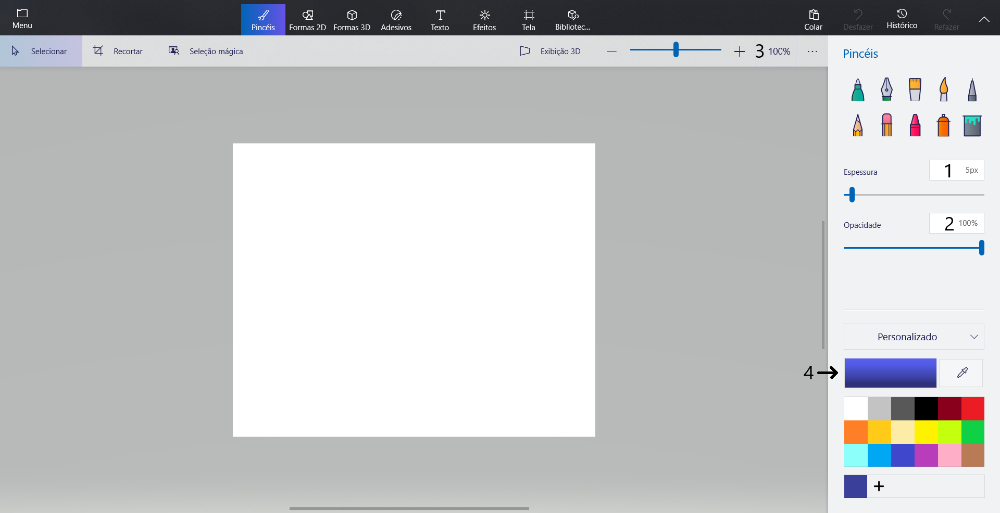
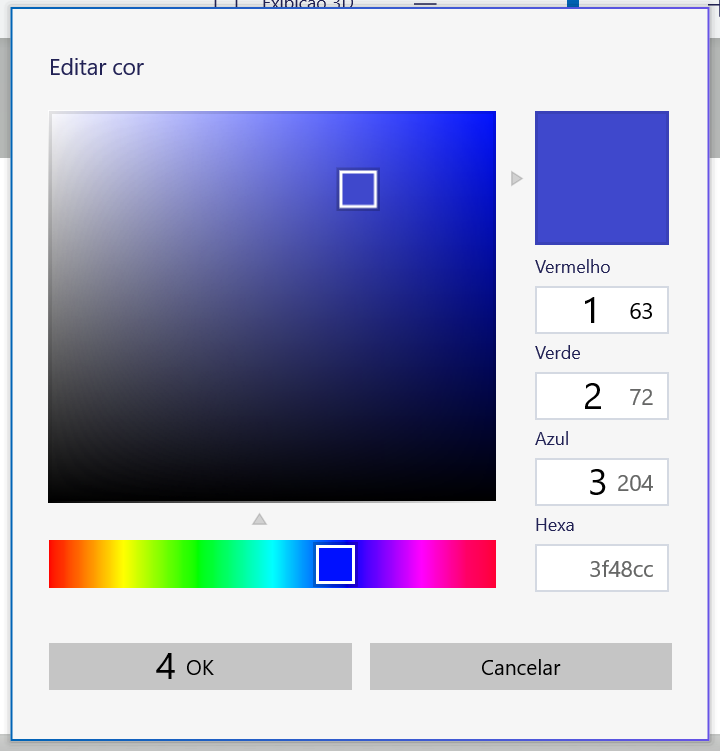
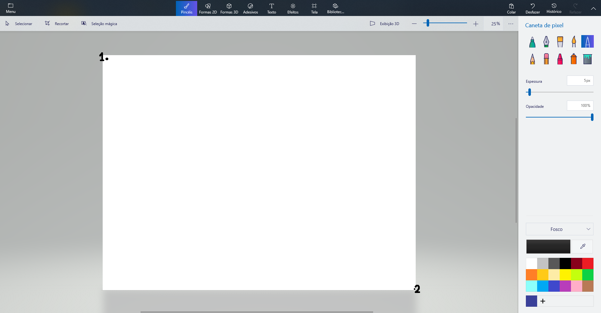

The "Autodrawer"
Autodrawer does the job of drawing an image file in Paint 3D using its native tools,
such as the Graphite Pencil, Crayon, etc. Every pixel on the image is parsed through the algorithm and drawn
using the machine's cursor and keyboard.
Settings: coordinates
Every coordinate - but one - corresponds to an absolute XY point on your monitor.
These coordinates will be used previously and during the drawing process.
The locations to get the coordinates are listed below:
Tools:
Paint 3D's tools are located in the top right corner. The tools listed below are
exemplified on the image.
- Marker
- Watercolor
- Pixel pencil
- Graphite pencil
- Crayon

Each coordinate must be taken from the middle of the tool selection box.
Values & Selected Color Preview:
The Drawer will use the following points to set the values:
- Brush Size
- Brush Opacity
- Zoom
- Selected Color Preview

The points are located on the right side.
Color Selector:
When you left-click on the Selected Color Preview, a Color Selector will open. The coordinates
must be taken based on the example image
- Red value
- Green value
- Blue value
- Ok button

Canvas:
Canvas' coordinates must be taken from the points listed below:
- Top Left Corner
- Bottom Right Corner

In this example, the canvas size is 4000x3000 and the zoom value is 25%.
Settings: values
The values below are going to be used by the drawer to set Paint 3D's tools and values. These settings are
pretty much self-explanatory:
- Zoom: amount of zoom that will be set.
- Brush size: thickness in pixels of the tool. Each tool has a different thickness min and max amount.
- Brush opacity: amount of opacity that will be set.
- Tool: the tool that is going to be used.
Settings: image
A image is necessary for the drawer to start drawing (obviously). This image cannot be greater than
canvas' size.
Canvas size is calculated by its subtracting the axes.
FAQ:
- There is a red "X" right beside some coordinate at the Coordinates Page, what does that mean?
- It means that the coordinate is invalid. Things that make a coordinate invalid: X or Y are blank; Some
coordinate is not numeric only; A negative value; A value greater than your resolution (example: inserting an X value of 1921 while your monitor's width is 1920).
- "Image size is greater than Canvas size". How do I solve it?
- You will need to resize either your canvas (at the Coordinates page) or your image